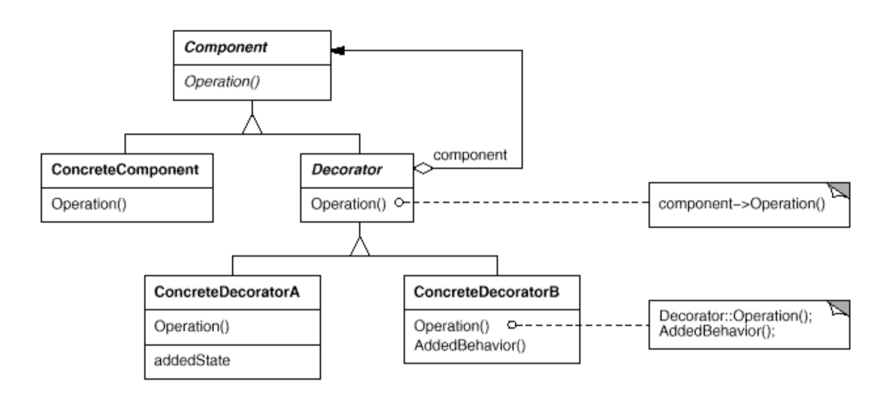

Decorator Pattern
런타임 시 객체에 새로운 능력을 추가하거나 객체의 행위를 변화시킨다. Decorator는 상속 대신 합성을 사용하여 클래스 계층 구조를 단순화시킬 수 있다.
구성
- Component
- 런타임에 새로운 책임이 추가되거나 행위가 변경되는 객체의 인터페이스
- Concrete Component
- 런타임에 새로운 책임이 추가되거나 행위가 변경되는 객체
- Decorator
- Component를 래핑하고 Component의 인터페이스를 따르는 인터페이스를 정의하지만 행동방식은 다르다.
- Concrete Decorator
- Decorator를 확장하여 새로운 행동양식을 정의한다.
구조

장단점
- 클래스 계층 구조의 크기와 복잡도가 상당히 줄어든다.
- 만약 Decorator 자체가 데코레이팅되어 있다면 Decorator의 기능 추가(예를 들어 푸시백)를 구현하는 것이 매우 어려워질 수 있다. 시스템은 Decorator가 적용되는 순서에 민감하다. 예를 들어 자바의 PushbackInputStream은 레이어의 가장 마지막에 사용되었을 때는 잘 작동하지만, BufferedInputStream 등으로 래핑되면 제대로 동작하지 않는다.(버퍼에 푸시백하지 않는다.)
예제
예제 코드 보기